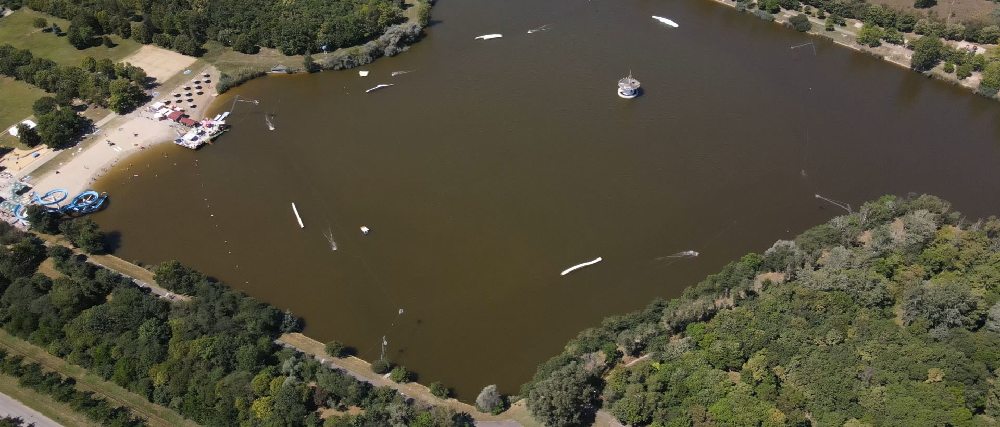

Megközelités
Tömegközlekedéssel
A központból közlekedő 405-ös vagy 450-es számú busszal Planetáriumig vagy az SZTK állomástól 8 perc sétára található.
A központból közlekedő 405-ös vagy 450-es számú busszal Planetáriumig vagy az SZTK állomástól 8 perc sétára található.